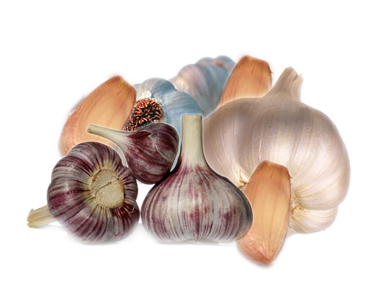

Benefícios do Alho
O alimento com propriedades funcionais é aquele que, além das funções nutricionais básicas, pode produzir efeitos metabólicos e/ou fisiológicos benéficos à saúde. O Alho é assim atualmente reconhecido, pela FDA (Food and Drug Administration) e pelo Ministério da Saúde.
Allium sativum é uma erva de odor forte e característico dos alimentos ricos em compostos sulfurados. O efeito benéfico do alho está vinculado justamente a estes compostos que, aliados aos bioflavonóides presentes na erva, agem como varredores de radicais livres em excesso no organismo, que certamente viriam a causar envelhecimento precoce das células (rugas), artrites e até distúrbios visuais.
O poder antioxidante do alho somente é alcançado quando ele é picado ou mastigado para a liberação dos fitoquímicos bioativos que ficam retidos no interior das suas células e a quantidade desses antioxidantes é três vezes superior aos de outros vegetais também ricos nestes compostos, como cebola e brócolis.
Estudos no mundo inteiro comprovam que seus compostos melhoram a saúde cardiovascular e previnem as doenças coronárias e circulatórias por diferentes mecanismos: reduzem a taxa de colesterol, tornam o sangue mais fluido, previnem a arteriosclerose e estimulam a dilatação das coronárias.
Rico em Vitaminas B, Colina e Vitaminas C. Os minerais identificados no alho incluem Cálcio, Magnésio, Fósforo, Ferro, Cromo e dois antioxidantes, o Zinco e o Selênio.
A American Dietetic Association indica o consumo de 600-900 mg de alho/dia, o que equivale a 1 dente de alho. Essa quantidade seria suficiente para a prevenção de fatores de risco cardiovascular.
Allium sativum é uma erva de odor forte e característico dos alimentos ricos em compostos sulfurados. O efeito benéfico do alho está vinculado justamente a estes compostos que, aliados aos bioflavonóides presentes na erva, agem como varredores de radicais livres em excesso no organismo, que certamente viriam a causar envelhecimento precoce das células (rugas), artrites e até distúrbios visuais.
O poder antioxidante do alho somente é alcançado quando ele é picado ou mastigado para a liberação dos fitoquímicos bioativos que ficam retidos no interior das suas células e a quantidade desses antioxidantes é três vezes superior aos de outros vegetais também ricos nestes compostos, como cebola e brócolis.
Estudos no mundo inteiro comprovam que seus compostos melhoram a saúde cardiovascular e previnem as doenças coronárias e circulatórias por diferentes mecanismos: reduzem a taxa de colesterol, tornam o sangue mais fluido, previnem a arteriosclerose e estimulam a dilatação das coronárias.
Rico em Vitaminas B, Colina e Vitaminas C. Os minerais identificados no alho incluem Cálcio, Magnésio, Fósforo, Ferro, Cromo e dois antioxidantes, o Zinco e o Selênio.
A American Dietetic Association indica o consumo de 600-900 mg de alho/dia, o que equivale a 1 dente de alho. Essa quantidade seria suficiente para a prevenção de fatores de risco cardiovascular.